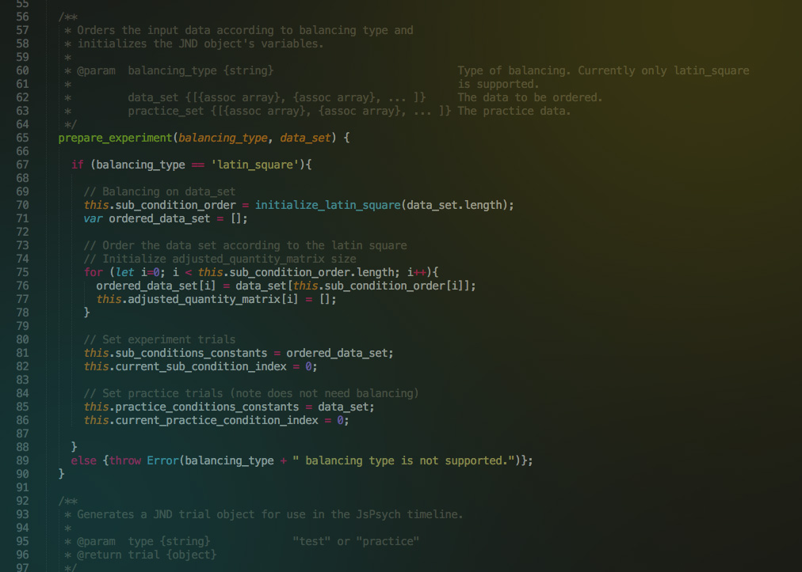

VCL Framework Development
WHEN:
May 2018 - Present
WHAT:
Independent Studies in Computer Science
WHERE:
University of British Columbia, BC, Canada
TOOLS:
May 2018 - Present
WHAT:
Independent Studies in Computer Science
WHERE:
University of British Columbia, BC, Canada
TOOLS:
- Javascript
- Node.js
- D3.js
- JsPsych
- Express.js
- EJS
- Git
- HTML/CSS
This project involves modernizing the Visual Cognition Lab's existing Java codebase to utilize modern web frameworks. The old codebase has suffered from a lack of software maintenance and documentation updates, which have led to many researchers having to "hack" a version of the codebase to suit their needs, resulting in a proliferation of bugs and poor extensibility.
To develop the new web application, we are employing a mixed methods design with a qualitative approach to understand the existing technologies available to us, in which we are documenting the strengths and limitations at each step/iteration.
Special thanks to Prof. Ronald Rensink, Madison Elliott, and all the other VCL members!
To develop the new web application, we are employing a mixed methods design with a qualitative approach to understand the existing technologies available to us, in which we are documenting the strengths and limitations at each step/iteration.
Special thanks to Prof. Ronald Rensink, Madison Elliott, and all the other VCL members!
>> Github <<
>> Paper (for Directed Studies) <<
The Challenge:
Design the new framework in such a way so that it is easy to learn, use and extend by other researchers, who may not necessarily have any formal programming experience, but must implement new visual experiments.
May 2018
Literature Review &
Literature Review &
Information Gathering
Performed a literature review on potential web frameworks used in other vision science labs. Potential tools considered included JsPsych, D3.js, PsychoPy, E-Prime, MATLAB.
Interviewed other members of the lab about their experiences with the current codebase, and how they were implementing new experiments. Many researchers were "hacking" the code to fit their needs, making the codebase buggy.
Interviewed other members of the lab about their experiences with the current codebase, and how they were implementing new experiments. Many researchers were "hacking" the code to fit their needs, making the codebase buggy.

June - July 2018
Proof of Concept Experiments
Narrowed potential frameworks to JsPsych for experimental control flow and D3.js for visualization, with Node.js for backend. Implemented POCs to assess feasibility of migrating two of their foundational experiments, JND (Just
Noticeable Difference) and Stevens.
August 2018
Piloting
POCs were piloted by researchers in the lab to ensure that behavior and output was expected, and equivalent to that produced by the current Java framework.
Any unexpected visual and data output was identified.
Issues were logged and some bug-fixing work was done.
Any unexpected visual and data output was identified.
Issues were logged and some bug-fixing work was done.
September - October 2018
Literature Review &
Literature Review &
Specification Planning
Performed literature review on end-user programming methods and software development for scientific software. Considering viability of HCI-centric approach.
Outlined specifications for the codebase migration. Analyzed structure of different forms of visual experiments in the original codebase, and validated understanding of the experimental methodology by interviewing researchers.
Outlined specifications for the codebase migration. Analyzed structure of different forms of visual experiments in the original codebase, and validated understanding of the experimental methodology by interviewing researchers.
November 2018
Informal Exploratory Study
Before commencing formal development of the new codebase with members of the team, there was a need to validate whether additional development effort is needed to make the JsPsych framework more accessible for non-computer science majors.
Usability of the JsPsych framework was assessed through an informal exploratory study. In pairs, members of the research team implemented new visual experiments (visual search and numerosity) solely using Javascript, JsPsych and HTML/CSS, and were therefore separate from the Node application. We wanted to isolate JsPsych as much as possibile to assess its usability from an end-user programmer perspective.
Feedback suggests that JsPsych is easy to use, and greatly facilitates setting up the experimental structure. What was difficult is that JsPsych does not provide any stimuli-generation functionality, so without using D3.js, visualization had to be handled by custom HTML/CSS and additional helper scripts. This therefore strengthened the need to use D3.js to support the data visualization component.
Usability of the JsPsych framework was assessed through an informal exploratory study. In pairs, members of the research team implemented new visual experiments (visual search and numerosity) solely using Javascript, JsPsych and HTML/CSS, and were therefore separate from the Node application. We wanted to isolate JsPsych as much as possibile to assess its usability from an end-user programmer perspective.
Feedback suggests that JsPsych is easy to use, and greatly facilitates setting up the experimental structure. What was difficult is that JsPsych does not provide any stimuli-generation functionality, so without using D3.js, visualization had to be handled by custom HTML/CSS and additional helper scripts. This therefore strengthened the need to use D3.js to support the data visualization component.
>> Github to the Visual Experiments <<
December 2018
Running Numerosity & Visual Search
These two experiments (which were developed as part of the exploratory study) were piloted to ensure correct behavior and data output.
I designed the UI to facilitate easy testing and customizability, especially for trial number, as we needed to estimate how many sub-conditions could be run given 1 hour of a participant's time.
After piloting, these tasks were run on actual participants, and the data collected were used in a VSS abstract submission.
I designed the UI to facilitate easy testing and customizability, especially for trial number, as we needed to estimate how many sub-conditions could be run given 1 hour of a participant's time.
After piloting, these tasks were run on actual participants, and the data collected were used in a VSS abstract submission.
Future Steps:
This project will continue into the January-May 2019 semester.
Development efforts will be prioritized to:
(a) Modularizing all plotting code so end-users will not need to deal with the underlying D3 code directly, and,
(b) Implementation of new base visual experiments, such as Equalizer and other Design conditions.
We ideally plan to take an HCI-oriented approach by conducting usability studies on the framework, to which other lab members will implement new conditions using the new codebase - this will give great insight to whether we are progressing in the right direction.